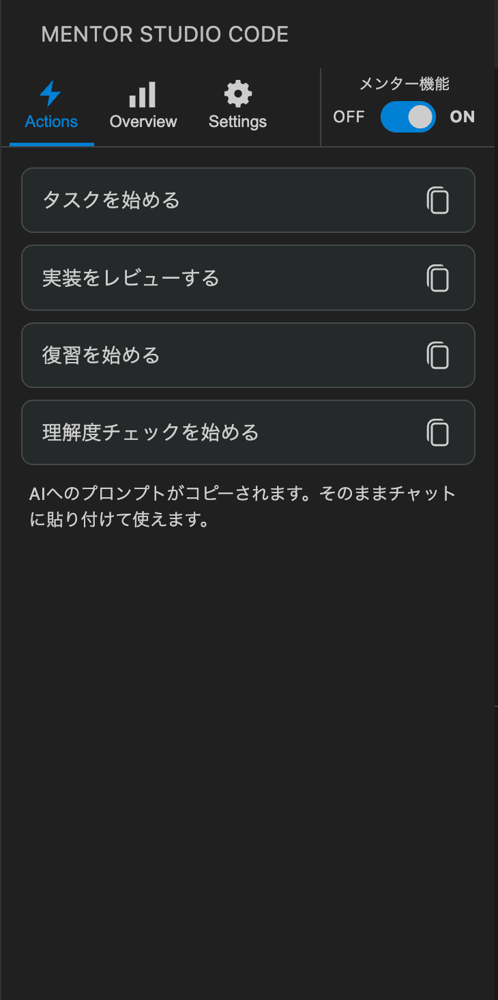
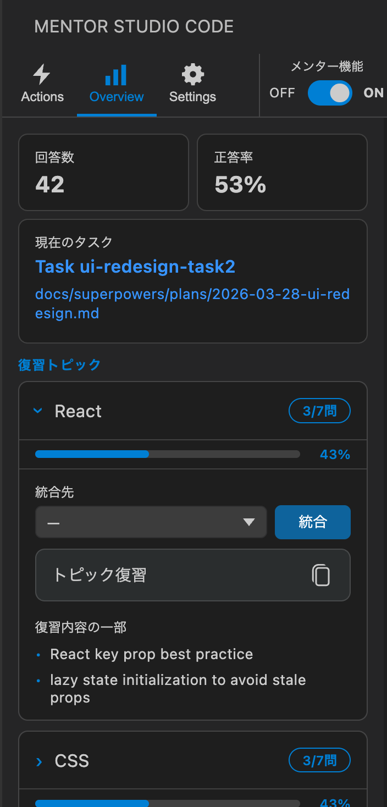
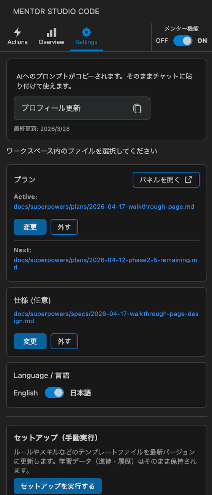

作りたいものを作りながらあなたのペースで学べる唯一無二のツール
※ この拡張機能はAIメンターの動作に Claude Code（Anthropic公式CLIツール）を使用します。事前に Claude Code のインストールとサブスクリプション（Claude Pro / Max）が必要です。
AIがコードを書く
なぜか動く
でも説明できる？
プロンプトをコピーしてメンターに質問。タスク開始・レビュー依頼もここから。

正答率・トピック別進捗・弱点をダッシュボードで一覧。

言語切替・プロフィール登録・ドキュメント連携。

用意された問題ではなく、作りたいものを作りながら学習できます。作りかけのプロジェクトがあれば、途中からでも使えます。メンター機能はON/OFFできるので、じっくり理解したい部分とAIに一気に進めてもらう部分を使い分けられます。
最初にあなたのレベルや、希望するメンターの振る舞いについて質問します。このプロフィールに基づき、毎回あなたに合わせた教え方をします。「ゆっくり丁寧に」「ヒントだけ出して」など、教え方のスタイルをリクエストできます。
VSCodeのサイドバーにダッシュボードを表示。現在のタスク、これまでの正答率や苦手な分野をいつでも確認できます。トピックごとの復習ボタンもあるので、以前つまづいた問題に再チャレンジできます。